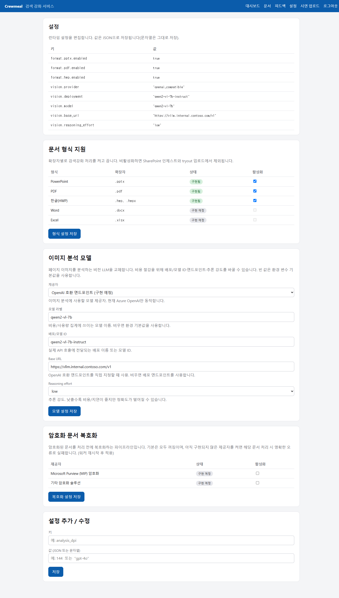
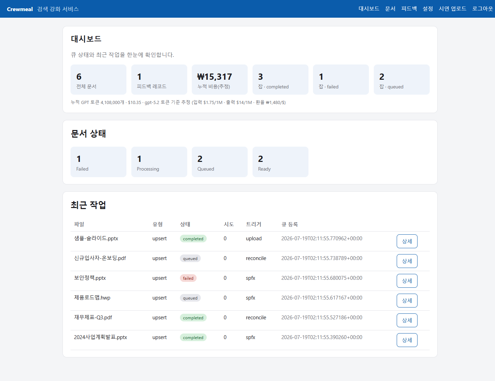
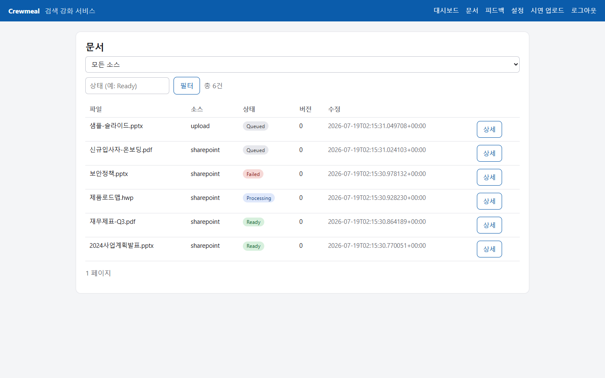
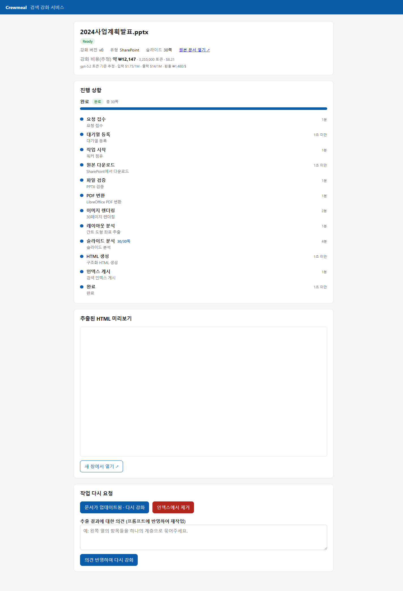
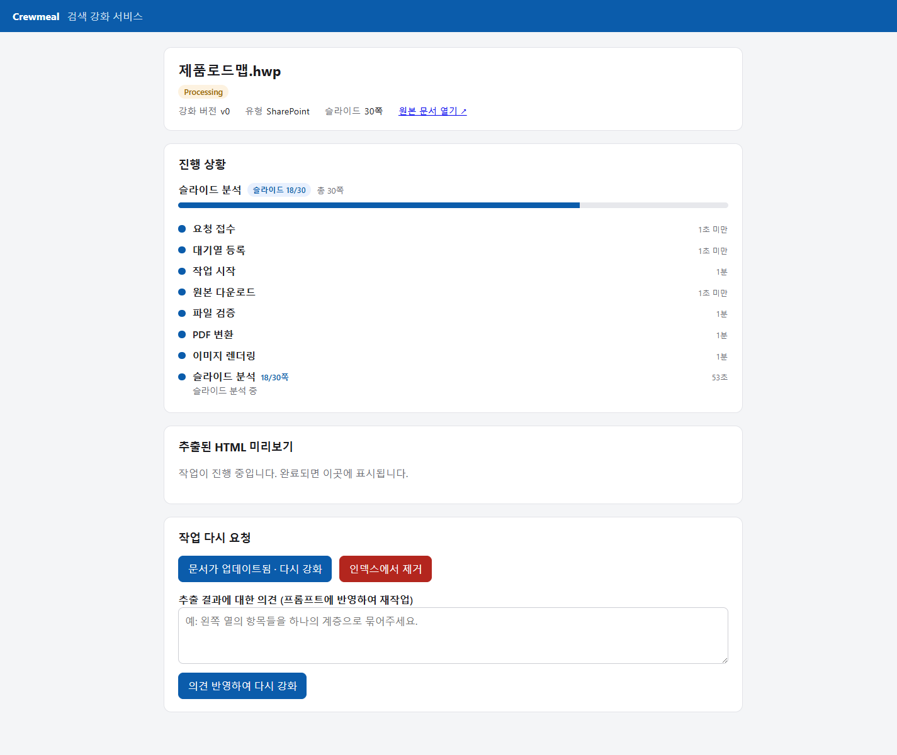
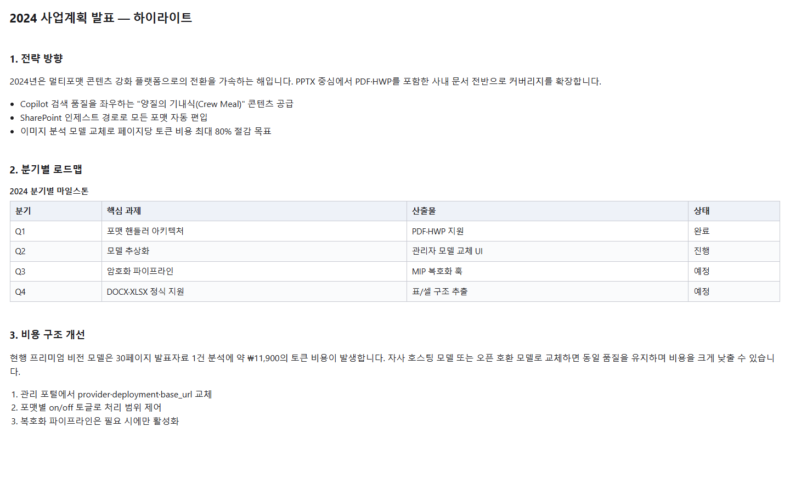
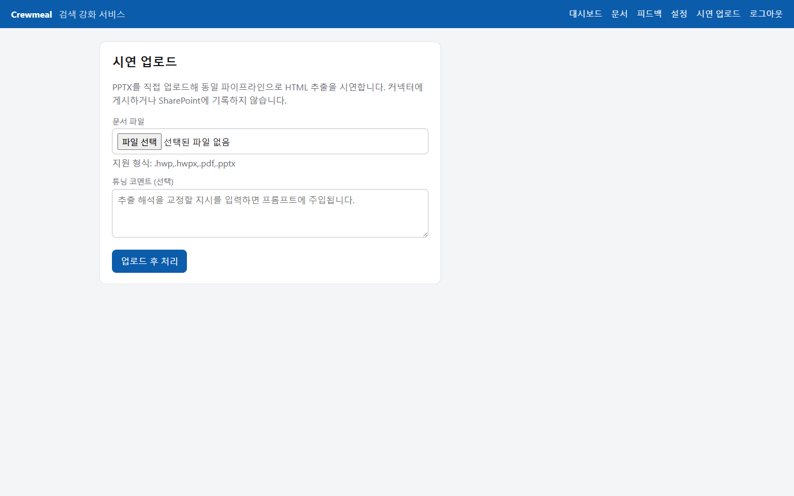

✈️🍱
Copilot에 주는 양질의 콘텐츠
→
부조종사(co-pilot)의 기내식
→
Crew Meal
이름에 담긴 뜻: Copilot이 잘 일하도록 먹여주는 잘 차려진 한 끼.
CrewMeal은 SharePoint의 PPTX·PDF·HWP 문서를 페이지 이미지로 렌더링하고 비전 LLM으로 분석해, 구조화된 검색 메타데이터로 강화합니다. 원본은 그대로 두고 Copilot 커넥터에 추가 색인만 얹어 검색 품질을 끌어올립니다.
이름에 담긴 뜻: Copilot이 잘 일하도록 먹여주는 잘 차려진 한 끼.
모든 포맷은 동일한 SharePoint 인제스트 경로로 흐릅니다. 새 포맷을 켜면 인제스트·재조정·시연에 자동 편입됩니다.
PPTX·PDF·HWP를 페이지 이미지로 렌더링해 동일한 분석 스키마로 처리합니다. DOCX·XLSX는 구조가 준비되어 있습니다.
PPTX · PDF · HWP 구현프리미엄 비전 모델은 30페이지 발표자료 한 건에 토큰 비용만 1만 원이 넘습니다. 관리 포털에서 provider·배포·엔드포인트를 교체해 자사/오픈 호환 모델로 비용을 낮춥니다.
관리자 교체 UIMIP(Microsoft Purview) 및 기타 암호화 솔루션을 위한 복호화 파이프라인 훅. 관리자 토글로 on/off 하며, 활성화 후 실제 복호화 연동은 배포 환경에 맞춰 확장합니다.
구조 준비 · 토글 제공SPFx 명령이 강화·삭제 요청을 큐에 적재하면 워커가 claim/lease로 자동 처리합니다. 원본 문서는 수정하지 않습니다.
opt-in 워크플로대시보드·문서 상태·포맷 토글·모델 교체·복호화 설정·시연 업로드를 한 곳에서. 누적 토큰 비용도 실시간 추정합니다.
비용 가시성상태 페이지의 튜닝 코멘트가 프롬프트에 주입되어 재작업되고, 피드백 코퍼스로 축적되어 JSONL로 내보낼 수 있습니다.
JSONL 내보내기각 포맷은 관리 포털에서 개별로 켜고 끌 수 있습니다. 구현된 포맷은 기본 활성, 스켈레톤 포맷은 잠금 상태입니다.
| 포맷 | 확장자 | 처리 방식 | 상태 |
|---|---|---|---|
| PowerPoint | .pptx | LibreOffice → PDF → 렌더 · 간트 geometry 근거 | 구현됨 |
| PyMuPDF 직접 렌더 · 페이지 텍스트 근거 | 구현됨 | ||
| 한글 (HWP) | .hwp · .hwpx | LibreOffice Writer 필터 → PDF → 렌더 | 구현됨 |
| Word | .docx | 핸들러 등록 · 추출 로직 예정 | 구현 예정 |
| Excel | .xlsx | 핸들러 등록 · 셀/표 추출 예정 | 구현 예정 |
아래는 실제로 앱을 구동해 캡처한 화면입니다. 이미지를 클릭하면 크게 볼 수 있습니다.







포맷 감지부터 색인까지, 모든 포맷이 같은 단계를 통과합니다.
확장자·매직·크기로 핸들러를 고릅니다.
활성화 시 암호화 문서를 복호화합니다.
페이지를 이미지로 변환합니다.
비전 LLM이 strict JSON으로 분석.
허용 태그 HTML로 렌더링.
Copilot 커넥터에 externalItem 게시.